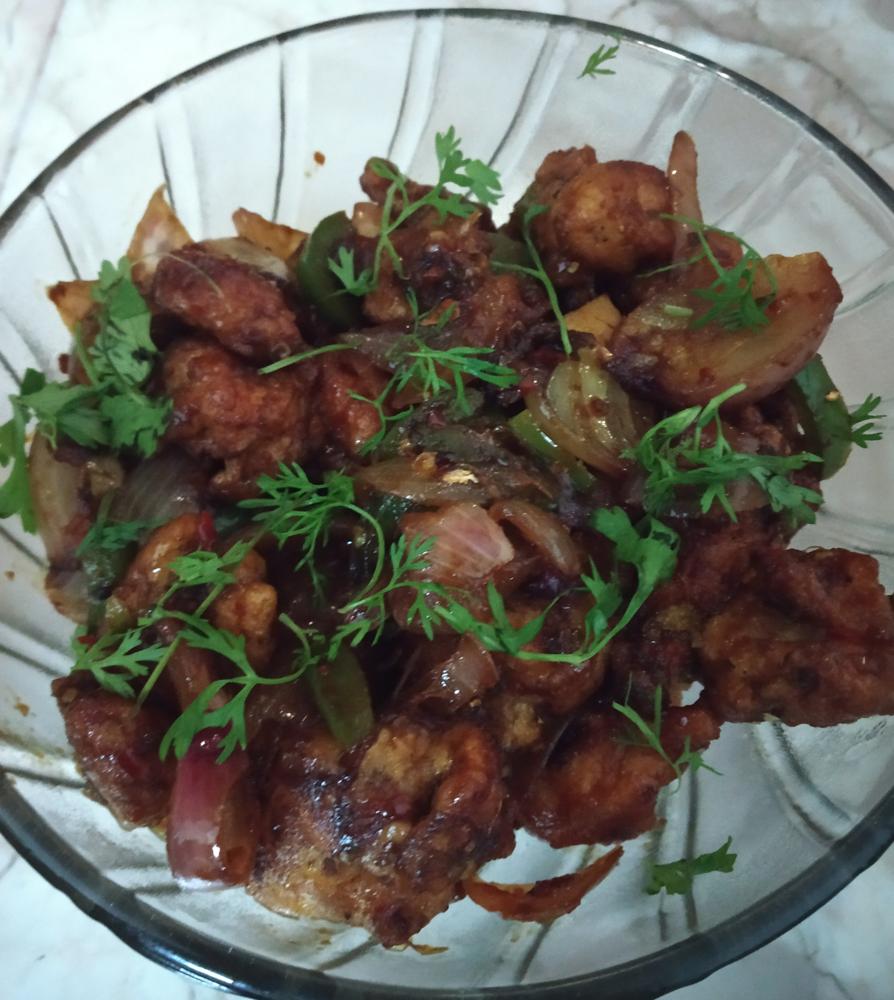

CHILLI CHICKEN
In frame is Chilli chicken, a popular Indo-Chinese dish of chicken of Hakka Chinese heritage.
In India, this may include a variety of dry chicken preparations.
Though mainly boneless chicken is used in this dish, some people also use bone-in chicken too.
INGREDIENTS :
1 Kg boneless chicken
soy sauce,chilli sauce, tomato sauce,vinegar and schezwan sauce
Maida,cornflour
Refined Oil
Chopped onion and capsicum (middle sized)
Salt as per taste
Dhaniya/cilantro leaves
STEPS ONE CAN FOLLOW(if needed) :
First marinate chicken with maida,cornflour,soy sauce,chilli sauce, tomato sauce,vinegar and schezwan sauce
Then fry the chicken in oil and the when its done add chopped garlic and ginger chopped to the pan and capsicum and onion
And then and the above mentioned sauce and toss it well in the sauce and serve